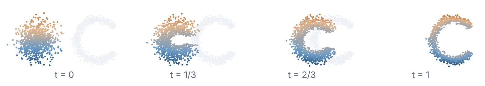
In the classical problem one matches two distributions. Many applications need to match several at once: the positions of N electrons, or N populations of agents. This is multi-marginal optimal transport: the unknown becomes a joint distribution of N variables whose marginals are prescribed.
These problems are hard to solve exactly. A standard trick is to add a small amount of entropy, which blurs the optimal plan: the blurred problem can be solved by a simple and fast rescaling procedure, the Sinkhorn algorithm. The price is that the answer is slightly off. A large part of my work measures this error: how fast the blurred cost approaches the true one as the blur ε goes to zero (convergence rates), and, when the original problem has several solutions, which one the blurred problem picks out in the limit (selection principles).
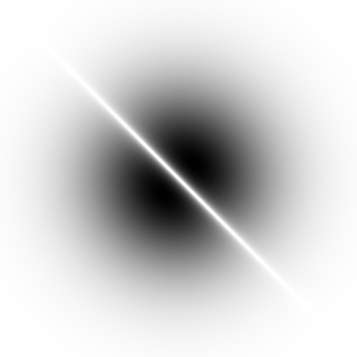
ε = 20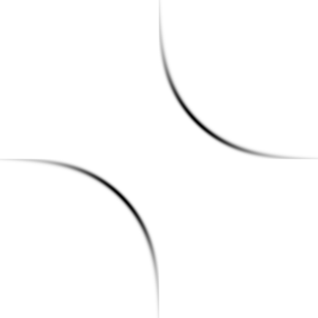
ε = 0.002In a molecule, electrons are described by a density ρ: how likely it is to find one at each point of space. Density functional theory, the workhorse of quantum chemistry, tries to compute the energy of a molecule from ρ alone.
When the repulsion between electrons dominates, they arrange themselves as far apart from each other as ρ allows: knowing where one electron is essentially tells you where all the others are. Finding this arrangement is exactly a multi-marginal transport problem, with N copies of ρ as marginals and the Coulomb repulsion as the cost. I study this connection and its extensions: what happens when the number of electrons may vary (grand-canonical transport, with S. Di Marino and M. Lewin), whether the energy is convex as a function of the number of electrons (it is not always!), and how to approximate the full quantum Lieb functional using only a few well-chosen configurations (with V. Ehrlacher).
Think of a crowd leaving a stadium, or of traffic on a road network: everyone chooses a route to minimise their own travel time, but the best route depends on what everybody else does. Mean field games describe the equilibria of such systems when the number of agents is very large.
Many of these equilibria can be rewritten as optimal transport or entropy-minimisation problems, which makes them easier to study and to compute, and to understand what happens when the noise vanishes (small-noise limit). I use this point of view for games with several interacting populations and for economic equilibria (Cournot–Nash), and for other random dynamics: the Schrödinger problem (the most likely evolution of a cloud of diffusing particles observed at two different times) or particles that “stick” to a boundary (sticky diffusions).
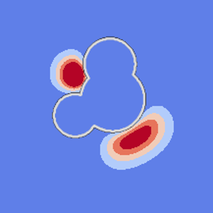
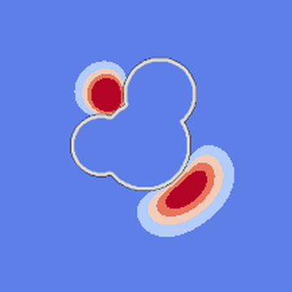
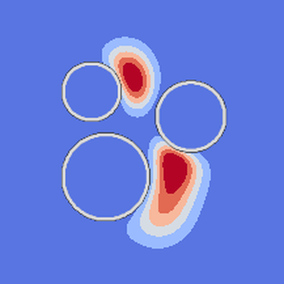
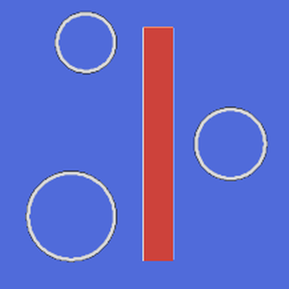
endMulti-marginal problems suffer from the curse of dimensionality. Discretise each marginal with 100 points: two marginals give a 100×100 transport plan, but ten marginals give 10010 = 1020 unknowns, far more than any computer can store.
My numerical work is about getting around this: Sinkhorn-type algorithms, which work with N potentials instead of the full plan; ODEs that follow the solution as the blur parameter changes; particle methods, which describe the solution by a moving cloud of points; reduced-order models, which solve a whole family of related problems at once; and column generation (project PiQuantO), which builds a sparse solution one configuration at a time.
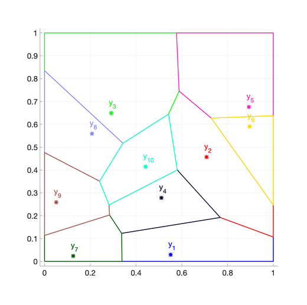
t = 0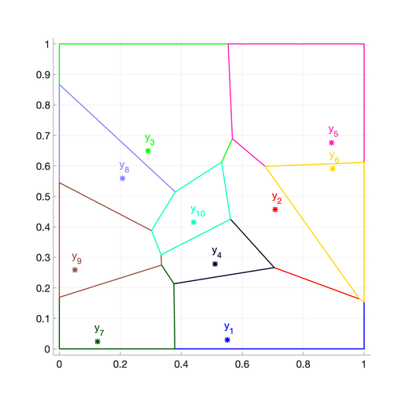
t = 0.25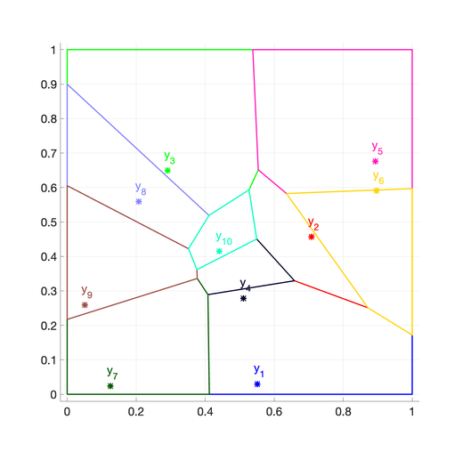
t = 0.5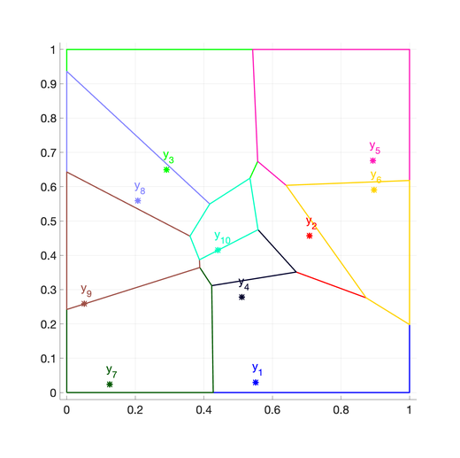
t = 0.75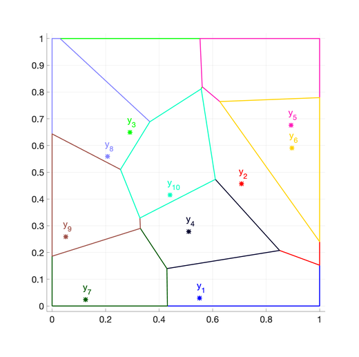
t = 1